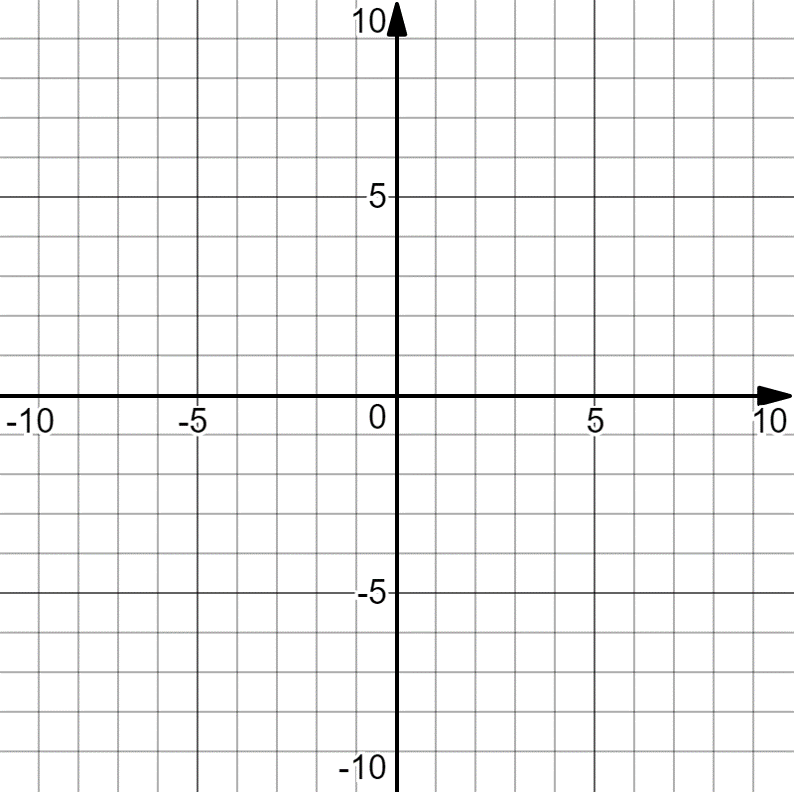

In Desmos, graph \(f(x)\text{.}\) Is this graph what you expected? Sketch the graph of \(f(x)\) below. Write an equation describing \(f(x)\) based on this graph.

Figure1.3.2.Blank coordinate plane with grid and labeled axes.
Stacey eats \(\frac{1}{3}\) of a candy bar she just bought. Her friend asks her for some, so she gives her friend \(\frac{3}{4}\) of her remaining candy bar. How much of the original candy bar is this?
A baker has a cake recipe that calls for \(\frac{1}{3}\) of a cup of sugar and a brownie recipe that calls for \(\frac{3}{4}\) of a cup of sugar. How much sugar does he need for both recipes?
You and two friends buy a pretzel. One of your friends takes \(\frac{1}{3}\) of the whole pretzel, and the other takes \(\frac{1}{2}\) of the whole pretzel. How much of the whole pretzel did they leave you?
You and some friends chip-in to buy \(\frac{1}{2}\) of a pie from the school bake sale. You decide that each person who chips-in should get a slice that is \(\frac{1}{8}\) of a whole pie. How many people should contribute to buying the pie?
NOTE: Whenever a rational expression has a numerator with degree equal or greater than the degree of the denominator, long division of polynomials can be used to produce an equivalent expression with a polynomial and a rational expression, where the numerator in the rational expression has smaller degree than the denominator.